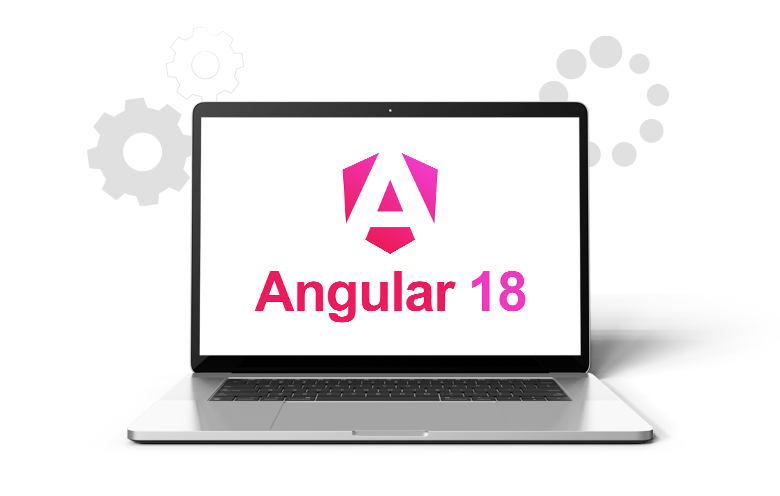
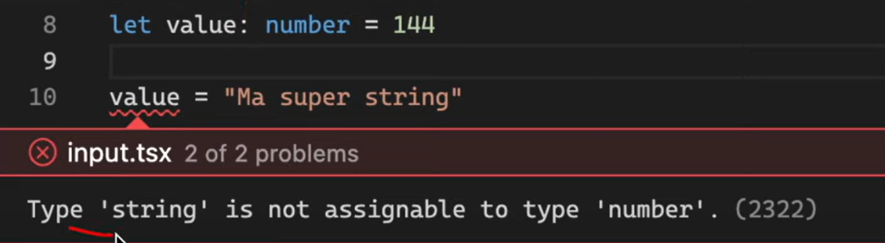
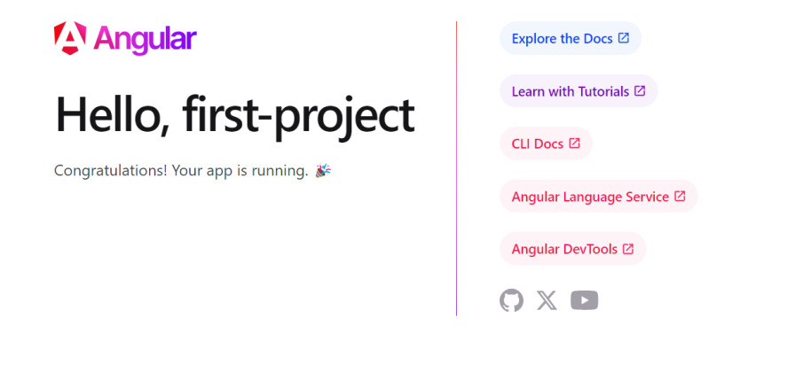
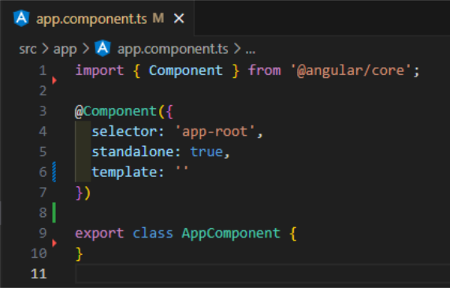
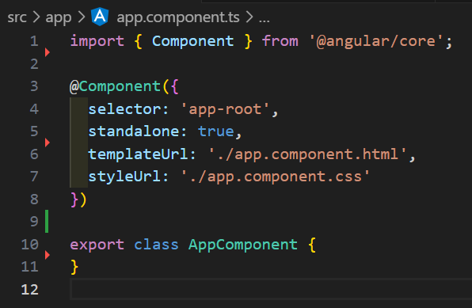
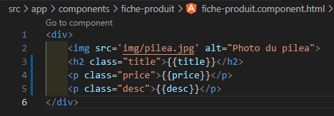
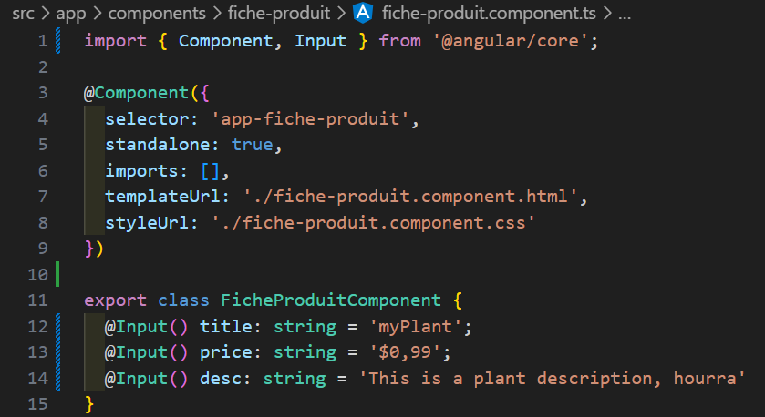
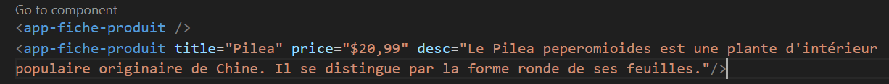

Angular 18
Index
Qu'est ce que Angular ?
La première version d'Angular, AngularJS, a été développé en 2010 par Google.
Aujourd'hui, AngularJS n'est plus maintenu mais sa réécriture, Angular, est de plus en plus populaire. La dernière version est la version 18, sortie en mai 2024.
Qu'est ce que Angular ? (suite)
Angular est un framework JavaScript front-end qui permet au développeur de travailler plus efficacement et mieux organisé.
Un framework, c'est comme un cadre de travail: Souvent, on récupère des fonctions qu'on a utilisées dans d'autres projets pour en coder un nouveau: on peut dire que c'est un mini framework personnel.
Angular, c'est un framework professionnel qui contient tout un tas de fonctions et que tous les utilisateurs peuvent consulter.
Qu'est ce que Angular ? (suite)
Angular permet de développer tous types d'applications robustes et efficaces.
Il est particulièrement efficace pour les applications monopage, qui ne se rechargent pas entièrement à chaque fois et qui sont donc beaucoup plus rapides.
C'est un framework orienté composants. On code plein de petits composants qui fonctionnent de manière autonome et on les met ensemble.
Les prérequis
On entend souvent que Angular est difficile à apprendre.
Pourquoi?
- Angular est basé sur le langage TypeScript;
- Il utilise la dernière version de JavaScript, ES6;
- Il est construit avec des composants web.
TypeScript
Qu'est ce que TypeScript ?
TypeScript a été créé en 2010 par Microsoft, d'abord à l'interne, puis a été présenté officiellement pour tous les développeurs en 2012.
TypeScript est un super-set de JavaScript; il contient toutes les fonctionnalités de base mais aussi plein de nouvelles choses.
L'avantage de TypeScript est le travail en grosses équipes. Comme le langage doit être typé, on évite beaucoup d'erreurs.
Utilisation de TypeScript
En JavaScript, on peut changer les types des variables; pas en TypeScript.
On doit ajouter un type à chaque variable. Maintenant, TypeScript enregistre souvent les types sans que le développeur ait besoin de les renseigner.
Quelques fonctionnalités d'Angular...
- Two-Way Data Binding: synchronisation des données et de l'interface utilisateur, ce qui facilite la mise à jour rapide.
- Component-Based Architecture: structure l'application web en composants réutilisables.
- Router: un peu comme React, gère la navigation entre les pages en optimisant les performances.
- CLI Angular: c'est un outil de commande en ligne pour générer et développer des applications Angular.
- Formulaires et Validation: Angular offre beaucoup de fonctionnalités avancées pour la gestion de formulaires.
- Angular n'est strictement un framework orienté objet, mais en utilise quand même quelques concepts comme les Class. Il est aussi orienté vers le développement réactif donc finalement, est assez hybride.
Quelques exemples de code propre à Angular...
- ngIf : affiche ou masque un élément selon une condition.
<div *ngIf="isLoggedIn">Bienvenue, utilisateur connecté !</div>
- ngFor : crée une liste d'éléments en itérant sur un tableau.
<ul> <li *ngFor="let item of items">{{ item.name }}</li> </ul> - ngClass : applique dynamiquement des classes CSS en fonction d’une condition.
<div [ngClass]="{ 'active': isActive, 'inactive': !isActive }">État de l'utilisateur</div> - ngModel : effectue la liaison de données bidirectionnelle (utile dans les formulaires).
<input [(ngModel)]="userName" placeholder="Entrez votre nom"> <p>Nom : {{ userName }}</p>
Installation d'angular
Pour installer Angular, nous avons besoin de 3 choses:
- Node JS, qui gère le code côté serveur;
- NPM, le gestionnaire de paquets;
- VS Code.
Ensuite, il suffit d'ouvrir le terminal de commande et de lancer la commande suivante:
npm install -g @angular/cli
Création du projet
Le terminal de commande peut vous poser quelques questions:
- Veux-tu activer l'autocomplétion? OUI
- Veux tu partager tes informations avec Google? Comme vous voulez!
Ensuite, pour créer un nouveau projet, il suffit de lancer la commande suivante:
ng new nom-du-projet --minimal
--minimal signifie qu'on créée un projet allégé, sans tous les fichiers de configuration qu'on utilise dans les gros projets.
Extensions
Par défaut, le langage de style du projet sera le CSS mais votre terminal peut vous demander de choisir.
Voici quelques extensions utiles à installer sur VS code pour travailler avec Angular et faciliter l'écriture du code:
- Angular Langage Service
- Angular 17 Snippet
- ESLint
- Auto Import
Découvrir le projet
Pour ouvrir le projet dans notre navigateur, il faut ouvrir un nouveau terminal dans VS Code et écrire la commande suivante:
ng serve
Structure d'un projet Angular
.angular: cache des fichiers pendant le build pour l'accelerer
.vscode: dossier où VS Code enregistre les configurations et préférences
node_modules: contient toutes les dépendances nécessaires au projet
public: équivalent du dossier assets
src: le dossier où on travaille le plus.
.editorconfig: configurations minimes. On peut l'ignorer.
.gitignore: permet de ne pas pusher certains fichiers.
package.json: contient toutes les informations sur les dépendances du projet.
package-lock.json: comme le package.json mais plus détaillé.
readme: arrive par défaut. On peut y entre ce qu'on veut.
tsconfig.app.json: contient la configuartion du compilateur TypeScript pour notre projet Angular.
tsconfig.json: configiration principale.
tsconfig.spec.json: contient encore plus d'éléments.
Structure du dossier src
src: le dossier principal où on travaille.
app.component: composant principal de l'application.
app.component.css: styles spécifiques au composant principal.
app.component.html: contient le rendu du composant principal.
app.component.ts: contient le comportement du composant principal.
app.component.spec.ts: contient les tests associés au composant principal.
app.config.ts: module racine; on va y configurer les dépendances externes.
app.root.ts: permet de définir les url mappés sur des composants.
index.html: c'est dans ce fichier que l'application sera affichée.
main.ts: point d'entrée de l'application. Il lance l'affichage du module principal.
styles.css: contient tous les styles globaux.
Un composant... C'est quoi ?
Un composant, c'est comme une brique de l'application, qui va s'occuper d'un aspect spécifique.
Chaque composant contient son contenu, son style et son comportement.
Structure minimale d'un composant
Pour bien comprendre la structure d'un composant, on va faire un peu de ménage: dans le dossier app, supprimez les fichiers suivants:
- app.component.css
- app.component.html
- app.component.spc.ts
Le fichier app.component.ts contient une erreur car nous avons effacé son fichier html. Mais pas de panique, on va faire du ménage dans ce fichier également:
Structure minimale d'un composant (suite)
Un composant est une class typeScript à laquelle on ajoute la notation @Component. Elle prend plusieurs paramètres:
- Le nom de la balise qu'on pourra utiliser dans le html. Ici, la balise est app-root. En effet, dans notre fichier html, on voit la balise app-root dans le body.
- standalone: true, ce qui signifie qu'il peut être utilisé sans avoir besoin d'un module. Pour les nouvelles versions d'Angular, c'est le plus souvent le cas.
- template: il contient le html que nous souhaitons afficher.
- styles: on peut y définir le style du composant.
Structure d'un composant
Ça devient difficile à lire si on a le html, le css et le TS dans le même fichier!
C'est pour ça qu'au début, on avait 3 fichiers différents:
- app.component.html
- app.component.css
- app.component.ts
On va donc les recréer, copier coller notre html et notre css dans les fichiers correspondants et refaire les liens dans le fichier app.component.ts, comme ceci:
Félicitations, votre projet est prêt à accueillir son premier composant!
Créer un composant
Pour créer un composant, le plus rapide est de le faire via le terminal de VS Code.
ng generate component nom-du-composant
On va créer un composant dans un dossier components. On peut spécifier directement qu'on ne veut pas le fichier test avec la commande --skip tests. Voici la commande raccourcie:
ng g c components/nom-du-composant --skip-tests
On utilise g pour generate et c pour component. Le composant généré va donc être stocké dans un nouveau dossier "components" à l'interieur du dossier app.
Contenu du premier composant
Préparation
Vous pouvez télécharger mon projet sur GitHub ou bien, si le votre est fonctionnel, continuer avec celui ci.
Pour l'exemple, on va faire une fiche produit.
Contenu du premier composant
Dans le fichier fiche-produit.ts, on voit que le nom de la class est FicheProduitComponent et que les liens sont déjà faits.
Si cela ne se fait automatiquement, il suffit de répéter les étapes de création du composant de base: créer deux fichiers : un html et un css, puis refaire les liens.
Ensuite, on va ajouter ce nouveau composant dans le html de app.component.html grace à la balise app-fiche-produit. Il est souligné en rouge car il faut aussi l'importer dans le fichier app.component.ts.
On ajoute le paramètre imports: [FicheProduitComponent], ainsi que l'import en haut de la page.
Le fichier html ne comporte plus d'erreur et si on actualise la page, le texte par defaut apparait: fiche-produit works!

On peut maintenant ajouter le html et css selon nos besoins.
Changer le contenu du composant de manière dynamique
Êtes vous prêts ?
On va reprendre le composant créé et voir comment en changer le contenu avec le fichier fiche-produit.component.ts.
Ne pas oublier que ça roule sur typeScript!
Dans la class, on va définir des propriétés:
- title: string = 'myPlant';
- price: string = '$0,99';
- desc: string = 'This is a plant description, hourra'
Une fois qu'on a défini toutes les propriétés, on peut changer le texte dans le html en insérant le nom de la propriété entre double accolade.
❮h2 class="title"❯{{title}}❮/h2❯
❮p class="price"❯{{price}}❮/p❯
❮p class="desc"❯{{desc}}❮/p❯

Mais... Ce n'est pas encore dynamique ?
Maintenant, on va voir comment pouvoir réutiliser le même composant en changeant les données.
Angular vient avec une fonctionnalité pour changer les données de manière dynamique:
Les inputs
Les inputs
Il existe deux manières de les utiliser:
- @input
- signal-input
Les signal input sont plus récents donc moins utilisés, bien que plus pratiques. On va utiliser les @input classiques.
Il faut importer les input à la ligne 1, comme suit:
import { Component, Input } from '@angular/core';
Utilisation des @input dans le fichier ts
Tout ce qu'on doit faire pour transformer nos attributs en Input, c'est d'ajouter @Input() devant le nom de la propriété dans la class FicheProduitComponent dans le fichier.ts.
Utilisation des @input dans le fichier html
Maintenant, on peut adapter le contenu de la carte en fonction des input dans le fichier app.component.html, c'est à dire le composant de base.
Attention! Seuls les strings peuvent être écrits name='string';
Si on veut changer un nombre, le nom de la propriété est un string mais la valeur est un nombre donc TypeScript n'est pas d'accord.
Astuce: on peut simplement regler le problème en mettant le nom de la propriété entre crochets.
La prochaine fois...
- Rendre nos composant encore plus dynamiques
- Changer les couleurs et les images
- Voir quelques fonctionnalités utiles
Conclusion
Merci de m'avoir écoutée et j'espère que vous ne pensez pas que Angular est...
Sources et documentation
Site web de Angular avec toute la documentation
Tutoriel Angular sur le site officiel
TypeScript en 5 minutes en français